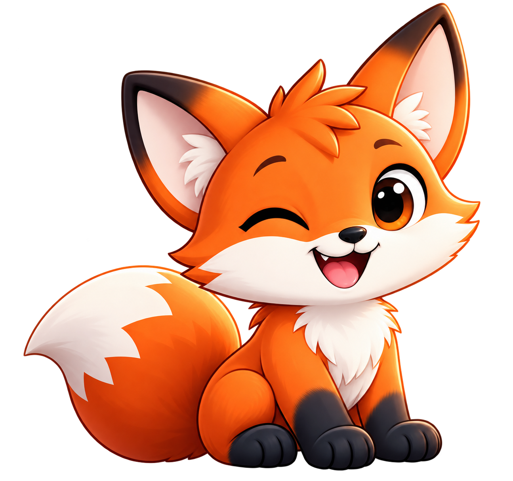
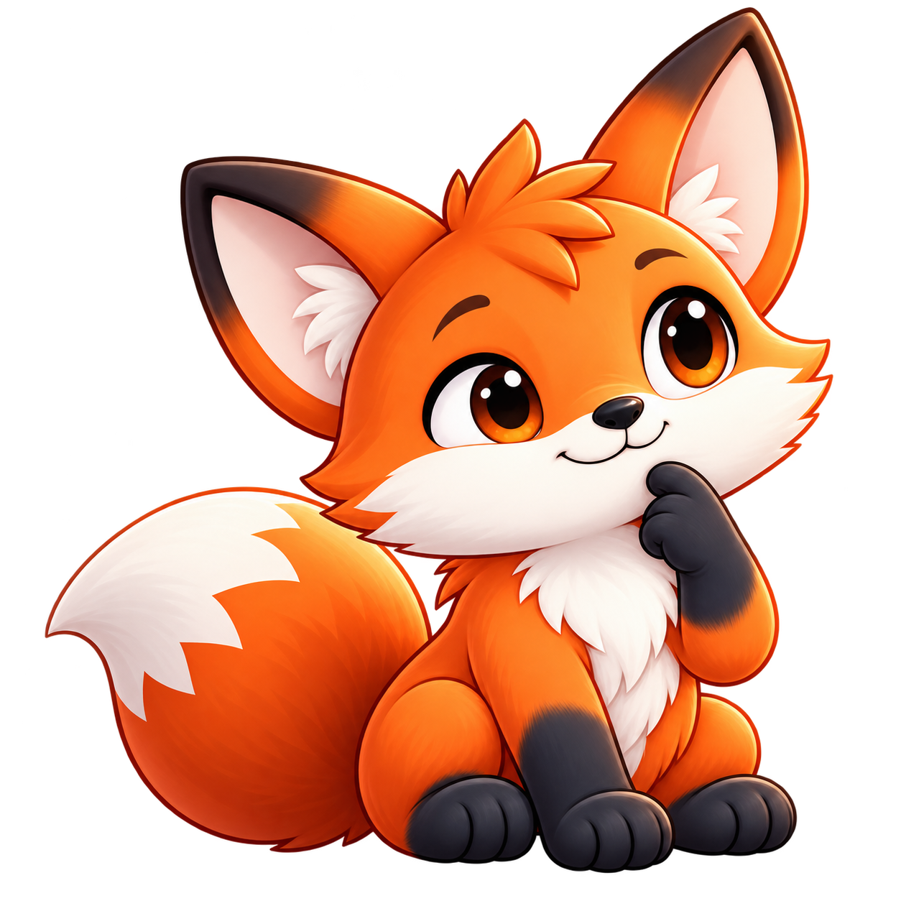
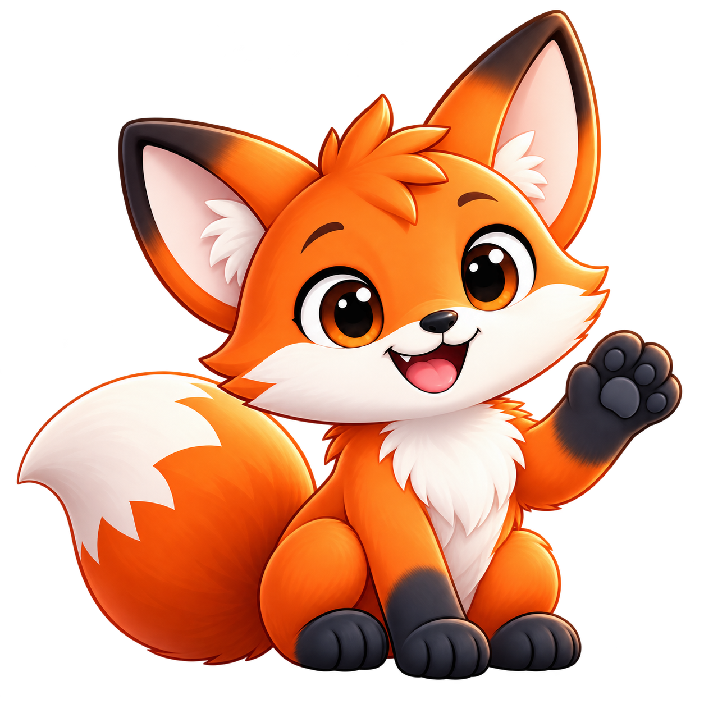

Curioso
Se asoma a lo que todavía estamos aprendiendo.
Zorro rojo europeo · Vulpes vulpes
Un pequeño zorro con un gran corazón JavaScript.
La mascota oficial de Spanish Total.js.
Curioso por naturaleza. Compañero de ideas, de primeras versiones y de esos pequeños «¡ya funciona!» que nos hacen seguir creando.
Toto™ · Marca de Spanish Total.js OEPM M4411785

Una idea más.02 / Cómo empezó todo
A veces, una comunidad
también necesita una sonrisa.
«¿Y si nuestra comunidad tuviera un compañero?»
La idea nació en Spanish Total.js: queríamos alguien que pudiera dar la bienvenida en nuestras apps, acompañar una explicación y celebrar con nosotros cuando una idea empieza a funcionar.
Primero pensamos en un fénec. Nos encantaban sus enormes orejas y aquella expresión de estar siempre descubriendo algo. Después, un zorro rojo europeo (Vulpes vulpes) nos acercó a dos lugares de nuestra historia: España, donde crece nuestra comunidad, y Eslovaquia, donde nació Total.js.
Conservamos las orejas. Llegaron el pelaje naranja, la gran cola y una sonrisa. Y el nombre: Toto, corto, cercano y con un pequeño guiño a Total.js.
Le gusta ese momento en que alguien dice:La historia completa y el pequeño cuento de Toto
«Ya está. Ahora funciona».

03 / Un zorro de verdad
Toto no es un zorro cualquiera: es un zorro rojo europeo, el que vive en los bosques, dehesas y campos de España y Eslovaquia. Tiene los rasgos de su especie, y por eso lo reconoces de un vistazo.
04 / Así es Toto
Se reconoce en una mirada curiosa,
en la punta clara de su cola
y en las ganas de probar otra idea.
Se asoma a lo que todavía estamos aprendiendo.
Recibe a quien llega y se queda a acompañar.
Disfruta encontrando una solución sencilla.
Siempre tiene otra idea antes de terminar el café.
05 / Una pose para cada momento
Cinco imágenes independientes.
Con transparencia y listas para acompañar
nuestras aplicaciones.
Prueba cómo se ve en tu interfaz.
Recursos propios de Spanish Total.js. Su visualización y uso se rigen por la licencia privativa.
Enlaza la imagen directamente desde esta web, sin descargar nada: sirve para una firma de correo o una página que mencione a Spanish Total.js. Incluye la atribución y el enlace.
<a href="https://totaljs-es.github.io/toto/">
<img src="https://totaljs-es.github.io/toto/assets/poses/toto-welcome.png"
width="160" height="160"
alt="Toto, mascota de Spanish Total.js">
</a>
<br>Toto, mascota de <a href="https://totaljs.es/">Spanish Total.js</a>06 / Su casa es Spanish Total.js
Toto es la mascota oficial de Spanish Total.js. Vive en nuestras apps, documentación y comunicaciones.
Toto™ · Marca de Spanish Total.js
OEPM M4411785
Puedes mostrar una imagen oficial para mencionar de forma veraz a Total.js, a Spanish Total.js o a una de sus aplicaciones, con atribución y enlace. Adoptarlo como mascota propia, crear derivados, vender productos o redistribuir la colección requiere nuestra autorización escrita.
Leer las condiciones de usoLicencia privativa · No es una colección de libre reutilización.

Hasta pronto
Un zorro rojo europeo.
Un gran corazón JavaScript.